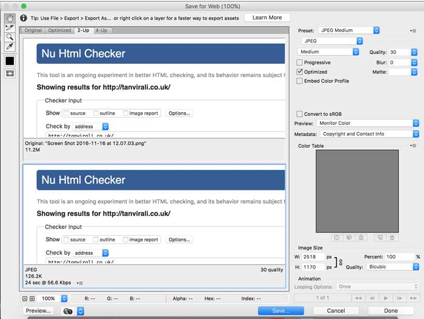

When creating a website most people focus on the design and then development and then finito. Testing your website is as important as making it, you wouldn’t want to spend years building a one of a kind private jet with beautiful interior only to find it can’t fly for more then 2 hours at a time.
Testing your website allows you to find flaws you wouldn’t have spotted and make your accessible and useable for all audiences. In this blog I’ll give a quick guide to getting your SEO and Optimisation up to scratch.
Validation is vital as allows you to find little flaws in your code, it can help semantically get your code to a great standard and improve the efficiency of your website. “Checking that a page displays fine visually is reasonable insurance but does not guarantee that it will work tomorrow”(Validator.w3.org, 2016) And that’s why you should validate your website.
I used the W3 Validator to validate each page of my website, this was a great website to check for errors, this allowed me to pin point any little mistakes I had and improve them for a correct validation.
WCAG and W3 are great tools to validate both your HTML and CSS, correctly validated code is “more readable by search engines and screen reader” (Bradley, 2011) so your work can reach the audience you intend.
Along with validation, page optimisation was also a task we had to complete and this involved reducing file sizes, optimising images or getting rid of all your unused CSS.
here are many ways to optimise your page but the more you can do, the better as it speeds up your website. Speed is essential for most user as most users wait about "3 seconds for a website to load on a desktop and about 5 seconds for mobile” (Shopify's Ecommerce Blog - Ecommerce News, Online Store Tips & More, 2016) and if its not loaded by then, you’ve lost your user.
here are many ways to optimise your page but the more you can do, the better as it speeds up your website. Speed is essential for most user as most users wait about "3 seconds for a website to load on a desktop and about 5 seconds for mobile” (Shopify's Ecommerce Blog - Ecommerce News, Online Store Tips & More, 2016) and if its not loaded by then, you’ve lost your user.
Image optimisation is one of the simplest techniques to implement into your website. Because my website is very image heavily, this was a task I had to research on and optimise each image to the smallest resolution without effecting its quality, Creative Bloq says “Optimising images is possibly the easiest web performance task you can do” (Staff, 2016).
I opened up Photoshop and used Save for web to reduce each of my images file size and then put it through Optimizilla to compress the image as much as possible.
Also using Gulp I as able to concatenate all my sass files into one main CSS file and minify it so it was reduced to as small as possible.
SEO or Search Engine Optimisation determines how high in the google ranking your website is placed. Its very hard to get confused by SEO and write a lot of useless information but for my portfolio and for many other websites, SEO is essential because you want potential users and employers to be able to find you online.
Jeff Bullas has a great article of super easy ways to improve your SEO.
Meta tags, such as Meta Title, Meta Description and Meta Keywords are very important as they improve your chances of appearing online based off what phrases and words someone uses. I made sure all my meta tags were descriptive and relevant to ensure I had the best chance moving up the google rankings.